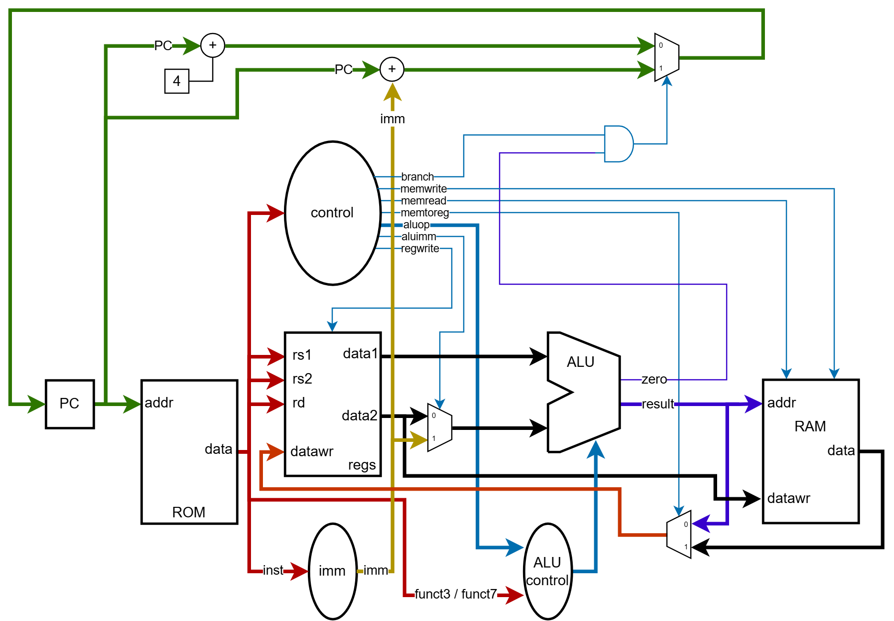

The tentative pipeline of the presented processor is shown in the below image, take your time to understand the different components and their interconnections:

Functional units
The functional units are
Instruction memory
Takes in a read address corresponding to the PC and returns an instruction. It is also referenced as the processor ROM. In this processor representation, instruction memory is read asynchronously with the PC address. Memory is word/aligned as this simple processor does not support compressed instructions
Inputs:
- Read address: Address of the next instruction (driven by PC[n-1:2], word-aligned)
Outputs:
- Instruction: The 32-bit instruction read from memory
Register unit
Inputs:
- Read register 1: Corresponds to the address of the first register to read
- Read register 2: Corresponds to the address of the second register to read
- Write register: Corresponds to the address of the register on which to write the instruction result
- Write data: Corresponds to the data to write to the Write register register address
- RegWrite: Control signal that signals if write data should be written into the write register
Outputs:
- Read data 1: Data corresponding to read register 1
- Read data 2: Data corresponding to read register 2
ALU
The ALU (Arithmetic and Logic Unit) is a functional unit dedicated to performing mathematical operations. It supports several mathematical operations in a full RV32I processor. In this specific implementation it supports the following mathematical operations between it’s two input operands: AND, OR,ADD,SUBSTRACT
Inputs:
- Source 1: First data source
- Source 2: Second data source
- Op: Codifies the operation that the ALU should perform between Source 1 and 2 operands
| Op | ALU operation |
|---|---|
| 0000 | AND |
| 0001 | OR |
| 0010 | ADD |
| 0110 | SUBTRACT |
Outputs:
- ALU result: Result of the operation of the ALU
- Zero: Set to one if ALU result is zero
Data memory
Stores program variables. Is also referred as the program RAM. It is accessed when the processor issues a load (read memory) or a store (write into memory) instruction.
Inputs:
- Address: Corresponds to the byte-aligned address to read/write from
- Write data: Corresponds to the data to write into memory
- wr_en: If set to one, the data in the Write data port is written into the memory Address
- rd_en: If set to one the data in Address is read to the output Read data
Outputs:
- Read data: Corresponds to the data present in input Address
Control unit
Takes in an instruction and generates control information for routing data and orchestrating the different processor units. Inputs:
- Instruction: the 32-bit instruction read from memory
Outputs:
- Branch: Set to one when instruction produces a branch
- MemRead: Set to one when instruction dictates that ram should be read
- MemToReg: Set to one when register write data input should be the one read from memory
- ALUOp: Transmits Instruction field codified operations into the ALUControl unit for determining the operation that the ALU should execute
- MemWrite: Tells the data memory when to write the data in its write data input port to its write address memory address.
- ALUSrc: Tells the ALU which source operand should its second operand take (an immediate or a register-saved input operand)
- RegWrite: Tells the register file whether to write the data in its Write data port into its Write address register address.
ALU control unit
Generates the 4-bit ALU control input using the instruction and a 2-bit control field. Inputs
- Instruction: the 32-bit instruction read from memory to determine the ALU operation from funct3 and funct7 fields
- ALUOp: control field to determine the instruction type and the corresponding ALU operation
| ALUOp | funct7 | funct3 | ALU operation |
|---|---|---|---|
| 00 | xxxxxx | xxx | ADD |
| 01 | xxxxxx | 100 | SUB |
| 10 | 000000 | 000 | ADD |
| 10 | 010000 | 000 | SUB |
| 10 | 000000 | 110 | OR |
| 10 | 000000 | 111 | AND |
| 11 | xxxxxx | 000 | ADD |
| 11 | xxxxxx | 110 | OR |
| 11 | xxxxxx | 111 | AND |
Outputs:
- Op: determines the ALU operation as seen in ALU